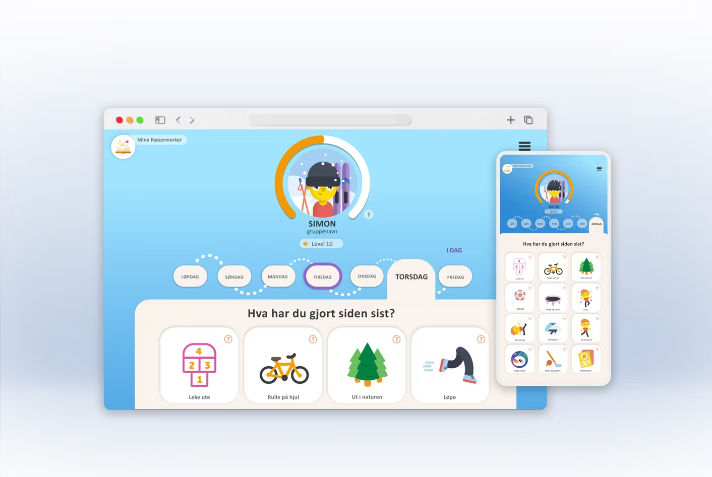
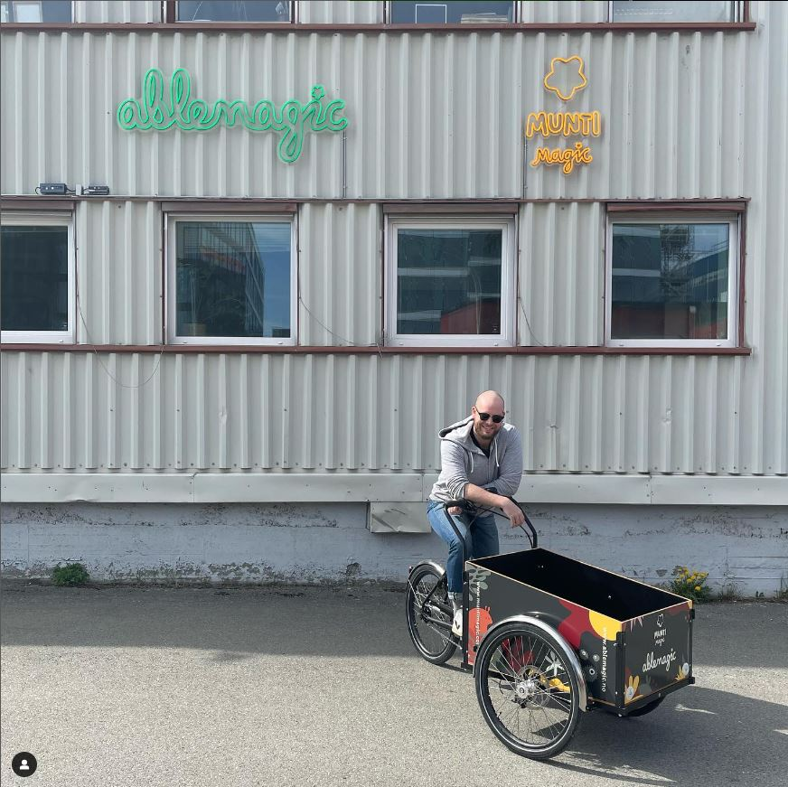
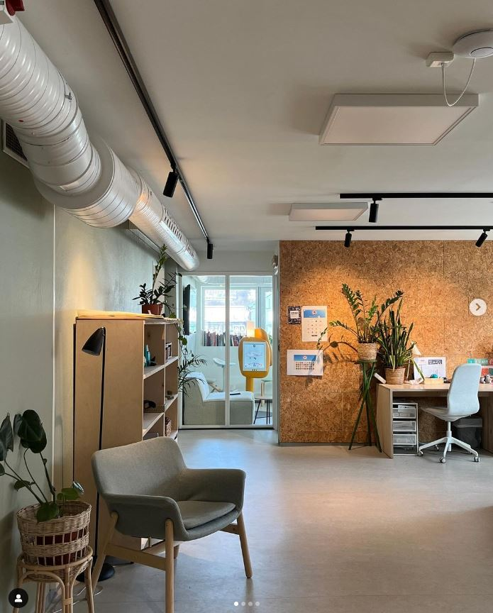
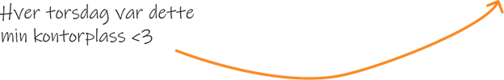
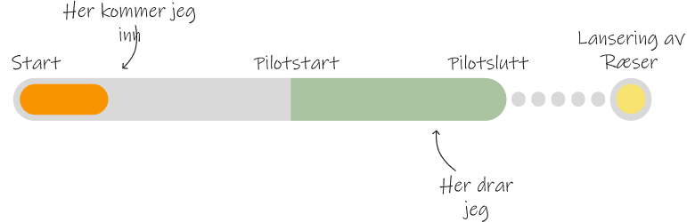

TPD4144 Design 6 -Fremtider
Vår 2024
RÆSER - En digital tjeneste for aktivitetsglede i barneskolen
Nøkkelord: tjenestedesign, brukerreise, evaluering, barneaktivitet, samarbeid med ekstern bedrift, designrefleksjon
Våren 2024 samarbeidet jeg med ablemagic i utviklingen av Ræser, en tjeneste som skal skape aktivitetsglede for barn i alderen 6–10 år. Som tjenestedesigner bidro jeg i arbeidet frem mot lansering av piloten gjennom brukerreiser, samskaping, evaluering og grafisk materiale. Prosjektet ga meg erfaring med design i praksis, samarbeid med fagpersoner og innsikt i hvordan en profesjonell designbedrift jobber.
INTRODUKSJON
Ræser er et prosjekt utviklet av ablemagic i samarbeid med Trondheim kommune og Trøndelag idrettskrets, og ble lansert til alle Trondheims barneskoler våren 2025. Prosjektet er sponset av Sparebank1 SMN og har som mål å skape aktivitetsglede og gode vaner for barn i alderen 6–10 år. Tjenesten består av den digitale plattformen raeser.no hvor elever kan registrere aktiviteter, jobbe mot mål og bli belønnet med både fysiske og digitale premier. Omtaler:
HVA ER RÆSER?

Ræser er en tjeneste med mål om å skape aktivitetsglede og gode aktivitetsvaner for barn i aldersgruppen 6-10 år. Tjenesten består primært av hjemmesiden raeser.no, som fungerer som en registreringsplatform for aktivitet. Ræser arrangeres på Trondheims barneskoler, og elevene opprettes som brukere på raeser.no gjennom skolen. Med Ræser kan elevene jobbe mot individuelle og felles mål for aktivitet, og bli belønnet i form av fysiske og virtuelle premier. Dette rapporter Trondheim kommune om Ræser så langt: "Så langt tyder tala på suksess: hittil i år er det 94 962 registreringar med totalt 243 731 aktivitetar. Det vil seie at kvar elev i gjennomsnitt har registrert over 22 aktivitetar. I tillegg blir det rapportert om høgare trivsel i klasseromma, og auka trafikk til biblioteka og aktivitetsparkane i kommunen."
HVEM ER ABLEMAGIC?

ablemagic er et designkontor som jobber med historiefortelling og -utvikling. De lager ulike former for historiebaserte opplevelser, fra utstillingsdesign og interaktive installasjoner, til spill, interaktive bøker og andre applikasjoner for mobile plattformer. Kontoret deres ligger på Dora i Trondheim, og består av designere, utviklere, illustratører og tekstforfattere.
MIN ROLLE
Jeg ble en del av Ræserprosjektet som tjenestedesigner, og har vært med i arbeidet mot lansering av tjenestens pilot. Min primære rolle har vært som sparingspartneren til ablemagic sin tjenestedesigner Simone, som også har hatt overordnet ansvar for Ræserpiloten. Det semesteret fikk jeg prøvet meg på å vært praktikant i en ekte designbedrift og erfart hvordan designyrket kan se ut som ferdigutdannet designer.


MIN LEVERANSE
Oppgavene mine var knyttet til planlegging og utforming av tjenestepiloten. Jeg utarbeidet brukerreiser, deltok i samskaping med fagressurser, utarbeidet evalueringskriterier for piloten samt bearbeidet og systematiserte funn fra brukerintervju og midtveisevaluering. Andre oppgaver inkluderte utarbeiding av informasjonsflyt og informasjonsskriv til piloten, og utkast til grafisk materiale. Nedenfor er en illustrasjon av når jeg omtrent kom inn i prosjektforløpet til Ræser.

REFLEKSJONER FRA ARBEIDET
Design 6 var et kjærkomment fag som ga meg både motivasjon og selvtillit i rollen som tjenestedesigner. Gjennom praktikantarbeidet hos Ablemagic fikk jeg innsikt i hvordan bedrifter jobber, hvordan man kan tenke langsiktig, og hvordan man samarbeider med mennesker med ulike roller i et prosjekt. Jeg lærte også viktigheten av å være bevisst på tidshorisonten i prosjekter, å avgrense arbeidet, scope når det er nødvendig, og å være komfortabel med hyppige skifter i fokusområder og arbeidsoppgaver.